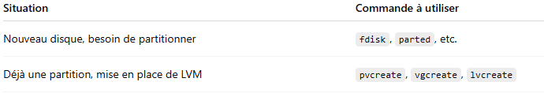
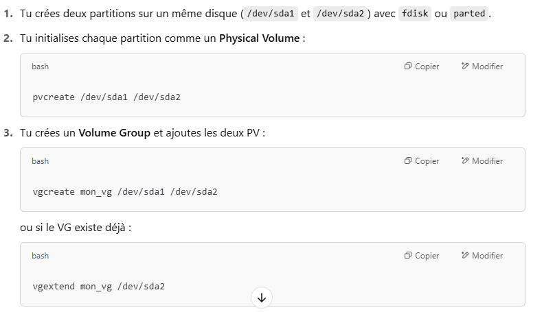
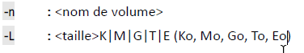

Outils de partitionnement
Créée le vendredi 09 mai 2025
LVM c'est bien


Prepa Disque
FDisk
Gestionnaire de disque / diskpart : créer les partitions sur le disque physique
fdisk [option] <périphérique de stockage>
fdisk /dev/sda
n (new)
p 1 [enter] [enter] (deuxieme enter est pour la taille de la partition (dernier secteur). Aujourd'hui on prend par défaut tout le disque en une seule partition, et on gère la division avec LVM)
t lvm
w (sauvegarder)
Logical Volume Manager
puis dans LVM ( équivalent des disques dynamiques)
Créer des volumes physiques
Conversion de partition physique en volume physique
pvcreate /dev/sdX1 ( déclarer ce disque dans LVM )
pvs (vérifier les PV sur Linux)
VGSystem
Créer des volumes groupes
Il est possible d'y inclure plusieurs PV.
Ajouter le nouveau PV (/dev/sdx1) à un VG
vgs (vérifier les VG)
vgcreate vggroup1 /dev/sdb1 (créer le volume group)
vgextend vggroup1 /dev/sdb2 /dev/sdc3 (Ajouter des volumes physiques au groupe de volume)
LVCreate
Créer les volumes logiques
On partage le groupe de volume
lvs (vérifier les LV)
lvcreate -n lvName -L 150M vggroup1 (créer un LV avec nom, taille et VG groupe ciblé )

ou étendre un LV existant
lvextend -L +5G /dev/vggroup1/lvName (augmente la taille du lvName de +5Gib)
lvextend -L 10G /dev/vggroup1/lvName (défini la taille du lvName à 10Gib)
lvextend -r -l +100%FREE /dev/vggroup1/lvName (défini la taille du lvName avec +100% de l'espace libre du VG)
ajouter -r pour faire automatiquement le resize2fs
PUIS :
Formater le volume logique ou la partition avec MKFS
Backlinks:
050 - Administration Linux:Espaces de stockage
050 - Administration Linux:Espaces de stockage:Systemes de fichiers:Outils